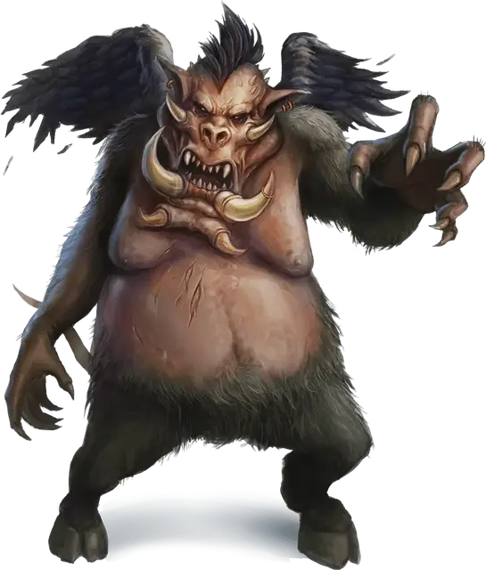

Нальфешни
Nalfeshnee
Большое Исчадие (Демон), хаотично-злое

Класс Доспеха 18 (природный доспех)
Хиты 184 (16к10 + 96)
Скорость 20 футов, летая 30 футов
| мод | спас | ||
|---|---|---|---|
| СИЛ | 21 | +5 | +5 |
| ЛОВ | 10 | +0 | +0 |
| ТЕЛ | 22 | +6 | +11 |
| мод | спас | ||
|---|---|---|---|
| ИНТ | 19 | +4 | +9 |
| МДР | 12 | +1 | +6 |
| ХАР | 15 | +2 | +7 |
Сопротивление урону огонь, холод, электричество; дробящий, колющий, рубящий от немагических атак
Иммунитет к урону яд
Иммунитет к состояниям отравление
Чувства истинное зрение 120 футов, пассивное Восприятие 11
Языки Бездны, Телепатия 120 фт.
Опасность 13 (10000 опыта)
Бонус мастерства +5
Особенности
Сопротивление магии. Нальфешни совершает с преимуществом спасброски от заклинаний и прочих магических эффектов.
Вариант: Призыв демона. У некоторых демонов может быть действие, позволяющее им призывать других демонов.
Призыв демона (1/день). Демон выбирает, кого призвать, и пытается это сделать. Нальфешни получает 50% шанс призыва 1к4 вроков [vrock], 1к3 хезроу [hezrou], 1к2 глабрезу [glabrezu] или одного нальфешни [nalfeshnee].
Призванный демон появляется в свободном пространстве в пределах 60 футов от призывателя, и действует как его союзник, не имеющий способности призывать демонов. Он призывается на 1 минуту или пока призыватель не умрёт или действием его не отпустит.
Действия
Мультиатака. Нальфешни использует Ореол ужаса, если может. Затем он совершает три атаки: одну укусом, и две когтями.
Укус. Рукопашная атака оружием: +10 к попаданию, досягаемость 5 футов, одна цель. Попадание: Колющий урон 32 (5к10 + 5).
Коготь. Рукопашная атака оружием: +10 к попаданию, досягаемость 10 футов, одна цель. Попадание: Рубящий урон 15 (3к6 + 5).
Ореол ужаса (перезарядка 5–6). Нальфешни магическим образом излучает разноцветную ауру. Все существа в пределах 15 футов от нальфешни, видящие этот свет, должны преуспеть в спасброске Мудрости Сл 15, иначе станут испуганными на 1 минуту. Существо может повторять этот спасбросок в конце каждого своего хода, оканчивая эффект на себе при успехе. Если спасбросок существа был успешным, или эффект на нём окончился, оно получает иммунитет к Ореолу ужаса этого нальфешни на следующие 24 часа.
Телепортация. Нальфешни магическим образом телепортируется вместе со всем несомым и носимым снаряжением, на расстояние до 120 футов в свободное пространство, которое он видит.
Описание
Нальфешни является одним из самых гротескных демонов — это тучная пародия на обезьяну и кабана, в два раза выше человеческого роста, с перистыми крыльями, которые кажутся слишком маленькими для его раздутого тела. Эти звериные черты скрывают выдающийся интеллект и хитрость.
Нальфешни разрушительны в бою, они с помощью крыльев летят над первыми рядами своего войска и ищут уязвимых противников, которые могут быть уничтожены с небольшим усилием. Из гущи боя, они телепатическим рёвом командуют меньшими демонами, вместе с тем заставляя врагов бежать и рассеиваться.
Нальфешни могут питаться ненавистью и отчаянием, но они предпочитают плоть гуманоидов. Они держат свои кладовые заполненными гуманоидами, похищенными из Материального Плана, чтобы пировать ещё живыми существами. Думая о себе как о развитых и культурных, нальфешни используют запятнанные ржавчиной столовые приборы во время своих трапез.
См. дополнительно статью: "Бестиарий: Демоны"